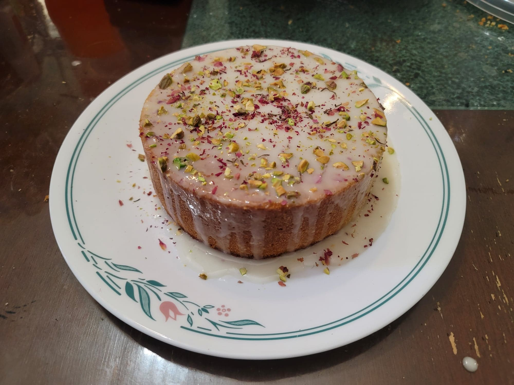

Kayk-e Eshgh (Persian Love Cake)

Ingredients:
Cake:
- 1/2 cup Butter
- 3/4 cup Sugar
- 2 Eggs
- 1/4 cup Yogurt
- 1 tsp Ground cardamom
- 1 tbsp Rose water
- Optional: 1/2 tsp Vanilla extract
- 1 cup (120 g) Flour
- 1/2 cup (45 g) Almond meal
- 1 tsp Baking Powder
Toppings:
- 1 cup Powdered sugar
- 1 1/2 tbsp Milk
- 1/2 tsp Rose water
- Dried rose petals
- Pistachios, chopped
Instructions:
- Preheat an oven to 325 degrees Fahrenheit. Grease a 6 inch cake pan with butter and line with parchment paper.
- In a large mixing bowl, cream together the butter and sugar with an electric hand mixer. Then add in the eggs and yogurt and cream again with the electric mixer. Add in the cardamom, rose water, and vanilla and mix thoroughly.
- In a separate bowl, whisk together the flour, almond meal, and baking powder. Then slowly add it to the wet ingredients while mixing with the electric mixer until homogenous. Pour the mixture into the prepared cake pan. Bake for about 60 minutes, or until a toothpick comes out of the center of the cake cleanly.
- Remove the cake from the oven and let cool completely. Trim the top of the cake off to make a flat surface. Then flip it upside down onto a serving plate.
- In a separate bowl, whisk together the powdered sugar, milk, and rose water until it forms a smooth glaze. Carefully pour the glaze over the top of the cake. Sprinkle the top of the cake with chopped pistachios and dried rose petals.